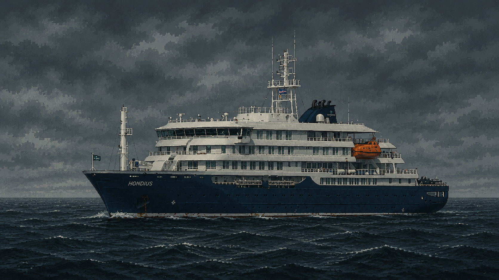

quarantine file / hondius signal
Make Plague Great Again
the doctor is in
again
block 02 / remember covid?
Remember covid?
Toilet paper lines, zoom pajamas, balcony clapping, three shots and a booster, two years of twitter arguments.
And then it was over and you forgot everything.
They forgot so fast they paid $10,000 to go touch penguins in antarctica.
Covid was a morning warmup.
Hantavirus doesn't do warmups.

block 03 / one rat
One rat.
One rat on a boat full of people who thought their net worth made them immune to medieval diseases.
Three dead, ship quarantined in the middle of the ocean. Your timeline is about to look very familiar. You've seen this before. You just didn't think it would happen again this fast.
live webview
Outbreak monitor.
block 04 / the doctor
He always comes back.
he was here in 1347
he was here in 1665
he was here in 2020
he's here now.
he didn't panic buy hand sanitizer, he didn't argue about masks on twitter, he's been wearing his since the black death and he's not taking it off.
every time humanity gets too comfortable — touches things it shouldn't, goes places it shouldn't go, forgets that nature has no respect for your bank account — the doctor puts the coat back on.
he doesn't trend, he doesn't ask for attention, the world always comes back to him.
block 05 / final note
covid didn't teach you, maybe this will.
mask up, glove up, hold the bag.